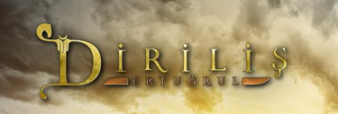

sevdiğim dizi:diriliş ertuğrul dur
Dizinin ilk sezon hikâyesi 13. yüzyılda, 1225 yılında, Kayı Boyu'nun Tapınak Şövalyeleri'ne karşı olan mücadelelerini ve yurt bulma uğraşlarını konu almaktadır. Dizinin ikinci sezon hikâyesi, 13. yüzyılın ortalarında yine Kayı Boyu'nun bu sefer Moğollara karşı olan mücadelelerini konu almaktadır. Üçüncü sezonda ise, 13. yüzyılın ortalarında Batı tarafına yerleşen Kayı Boyu Ertuğrul Bey önderliğinde Bizans İmparatorluğu ve Çavdaroğulları Obası'na karşı mücadeleler işlenmiştir. Dördüncü ve beşinci sezonda ise Bizans, Selçuklu meseleleri ve Moğollar bir arada işlenmiştir[2] Dizi için 6 ay kadar hazırlık yapılmıştır. Oyuncuların tamamına at binicilik dersleri verilirken, erkek oyunculara da kılıç kullanma dersleri verildi. ayırntılı bir şekilde okumak istersiniz burada tiklayin
konumuzu Öğrenmek için tiklayin